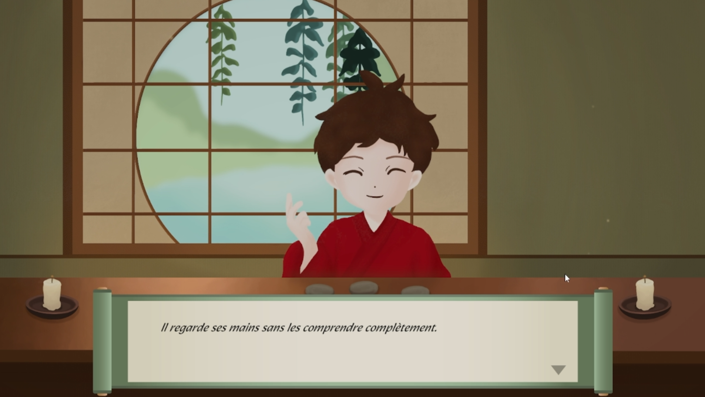
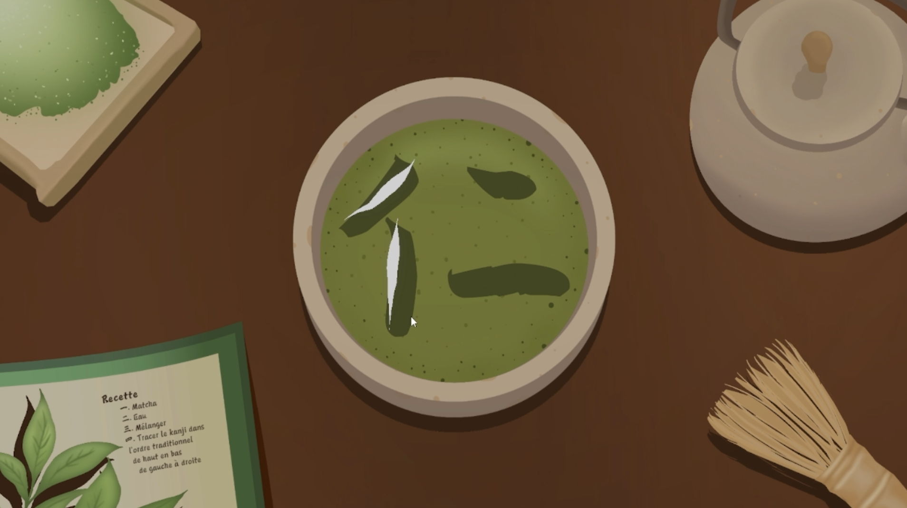
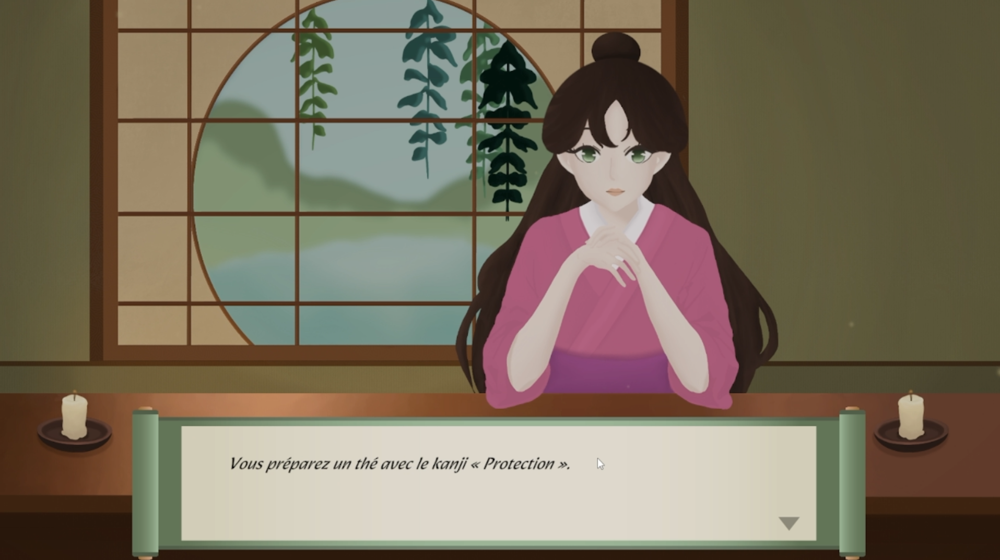
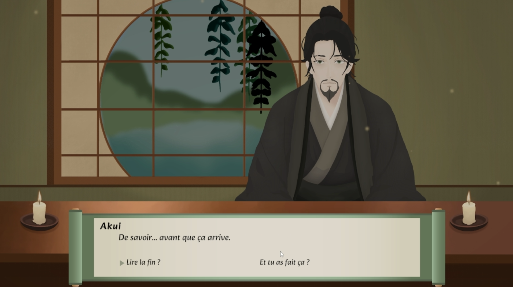

Jeu pédagogique 2D inspiré de la mythologie japonaise. Le joueur rencontre des personnages dans une maison de thé empreinte de mystère. Il comprend une mécanique de dessin de kanjis permettant d'apprendre l'ordre traditionnel du tracé ainsi que quelques kanjis associés à chaque histoire.
Ce jeu constituait mon projet de fin de technique. Je souhaitais mettre de l'avant mes talents artistiques et mes compétences techniques en développant un jeu à la fois pédagogique et narratif. J'ai relevé plusieurs défis, notamment l'intégration d'Ink pour la narration ainsi que la programmation de la mécanique de tracé des kanjis.
Tous les éléments visuels ont été créés principalement avec Procreate, certains éléments ont été créés avec Illustrator et Photoshop.



